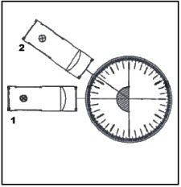

| Objetivo: |
Estudiar el comportamiento de un haz estrecho al pasar la luz de cristal a aire, y medir el ángulo de refracción en función del ángulo de incidencia.
|
|
| Introducción: |
Ver introducción práctica 43.
Cuando un haz de luz pasa de un medio como aire a agua, se desvía
acercándose a la normal porque el índice
de refracción del agua es mayor que el del aire. En el caso contrario, es
decir, si pasa de agua a aire, se aleja de la normal. En la figura 1, el haz se
acerca a la normal al pasar del medio 1 al 2, por lo tanto podemos afirmar que n2 > n1. El fenómeno de refracción de un rayo luminoso es la
consecuencia del cambio en la rapidez de la luz en los diferentes medios
transparentes por los cuales viaja el rayo. (Ver figura 1)
|
|
|
| Desarrollo Experimental: |
Atención:
Cuida que en todos los pasos del experimento (Figura 4) el haz de luz estrecho de la caja luminosa pase siempre exactamente en
dirección al centro del disco óptico (“pie de la normal”), y que el cuerpo óptico no varíe su posición al mover la caja.
Montaje: (Ver Figura 2)
- Coloca el disco óptico en la mesa delante de ti y el cuerpo óptico, con la superficie mate hacia abajo, sobre la línea vertical, dentro de las marcas, como se muestra en la figura 1.
- Coloca el diafragma de una rendija en la caja luminosa sobre la parte de la lente, y ponla aproximadamente a 1 cm. del disco óptico.
- Pon, con cuidado, en la
mitad de la cubeta más alejada de la caja luminosa unos 20 ml de agua.
Experimento 1:
Comportamiento del haz de luz estrecho en la superficie de separación aire-agua.
-
Conecta la caja luminosa a la fuente de alimentación (12V).
-
Desplaza la caja luminosa (figura 1: 1 -ajuste) hasta que el haz de luz estrecho transcurra exactamente sobre el eje óptico (línea 0º -normal al plano de incidencia).
-
Cuando la cubeta y la caja estén en la posición correcta, el haz de luz estrecho continuará discurriendo sobre el eje óptico después de atravesar el agua.
- Desplaza la caja luminosa con cuidado (figura 1 : 2 -primera posición) hasta que el haz de luz incida sobre la cubeta bajo un ángulo de 40º (con respecto a la normal al plano de incidencia).
-
Describe el comportamiento del haz de luz estrecho al atravesar la superficie de separación aire-agua.
-
Compara el ángulo de incidencia con el ángulo entre el haz de luz saliente (refractado) y el eje óptico (ángulo de refracción β). (Ver figura 3).
Experimento 2:
Determinar el ángulo de refracción β en función del ángulo de incidencia
α
-
Desplaza la caja luminosa
hasta que el haz de luz incida formando exactamente un ángulo de 10º con la normal al plano de incidencia
(línea 0°).
- Lee el ángulo de refracción β y anota su valor en la tabla 1.
- Repite este procedimiento con los otros ángulos de incidencia α dados en
la tabla 1.
- Desconecta la fuente de alimentación.
|
| Resultados y Conclusiones: |
|
Comportamiento del haz de luz estrecho en la superficie de separación aire-agua.
1) Comportamiento del haz de
luz estrecho al incidir oblicuamente sobre el agua:
2) Comparación del ángulo de incidencia con el ángulo de refracción.
Determinar el ángulo de
refracción β en función del ángulo de incidencia α
De acuerdo con lo que has observado
1) Describe el comportamiento del haz de luz estrecho cuando incide oblicuamente sobre la superficie de separación aire-agua.
2) ¿Por qué las imágenes reflejadas en grandes superficies de agua son más oscuras que el original?.
3)
Compara los ángulos de incidencia α con sus correspondientes de refracción β de la tabla 1. Formula el resultado.
4) ¿Qué resultado da la medición con un ángulo de incidencia de 0°?
Intenta razonar el resultado.
5)
Sobre la base del resultado de las mediciones y de las condiciones del experimento, intenta formular una ley general sobre el paso de la luz a través de una superficie de separación aire-agua.
|
|
|
| Figura 1 |
|
| |
Figura 2:
1 –Ajuste, 2 –Primera Medición |
|  |
| |
Figura 3:
|
|
| |
|